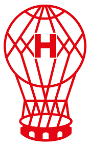
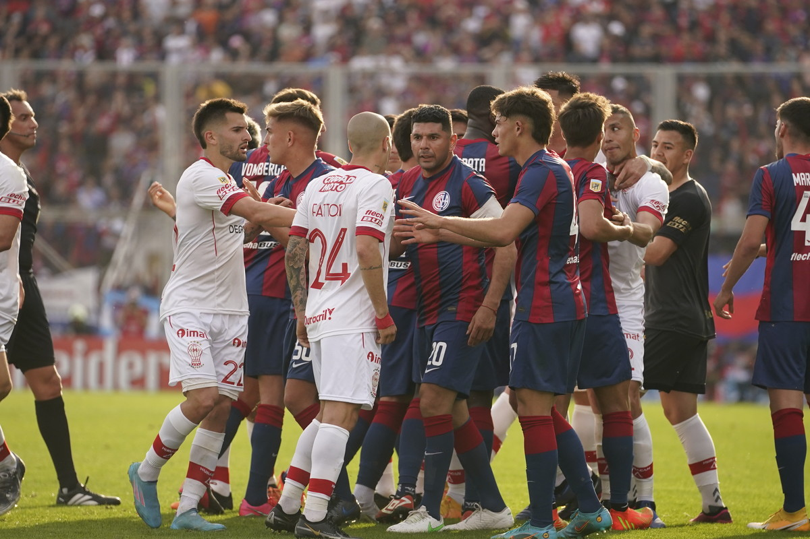

Huracán
El Club Atlético Huracán es una institución social y deportiva del barrio de Parque Patricios de la ciudad de Buenos Aires, Argentina, cuya principal actividad es el fútbol masculino, en la que su primer equipo se desempeña en la Primera División de Argentina. También se practican otras disciplinas, como fútbol femenino (en la que disputa también el respectivo certamen de primera división), vóley, hockey sobre patines (ver Huracán hockey), patín, taekwondo, judo, hockey sobre césped, natación, gimnasia artística, básquet, balonmano, futsal, boxeo, tango, yin tao y teatro, entre otros. Fundado originalmente el 25 de mayo de 1903, en el barrio de Pompeya, fue reorganizado a partir del 1 de noviembre de 1908. Su apodo es el Globo, o su diminutivo, el Globito, y el de sus hinchas, Quemeros. El color de su camiseta es blanco, con la insignia y vivos rojos.
Partidos que disputaron ambos equipos como rivales
El clásico Huracán-San Lorenzo es uno de los tradicionales encuentros futbolísticos de Argentina y la ciudad de Buenos Aires. Lo disputan el Club Atlético Huracán y el Club Atlético San Lorenzo de Almagro, y es uno de los más antiguos y convocantes del país.También se refieren a él como el clásico porteño, y el clásico de barrio más grande del mundo. En la actualidad trasciende los límites locales, convirtiéndose en un partido seguido tanto a nivel nacional como internacional, que sin embargo mantiene la esencia que le dio origen. Es el tercer clásico más importante del país en cuanto a suma de títulos oficiales (nacionales e internacionales) logrados por los dos clubes, con un total de 35 títulos (13 de Huracán y 22 de San Lorenzo), solamente detrás del Superclásico y el clásico de Avellaneda. Además, ambos clubes se posicionan en los primeros seis puestos en cantidad de entradas vendidas a lo largo de la historia (San Lorenzo tercero y Huracán sexto) y en la mayoría de las mediciones de cantidad de simpatizantes en el país. San Lorenzo y Huracán son dos de los clubes más antiguos, laureados y convocantes del fútbol argentino. Ambos integran la galería de Clubes clásicos de la FIFA por Argentina, junto a otros nueve equipos.
